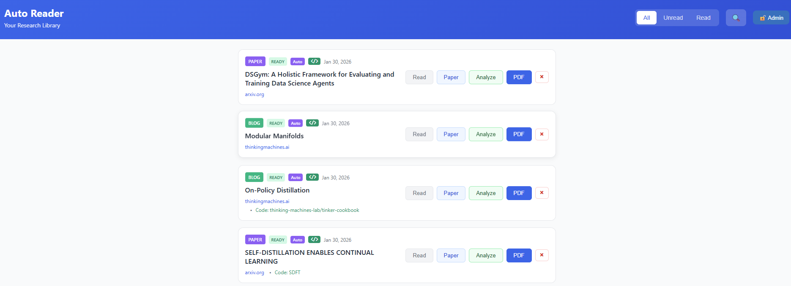
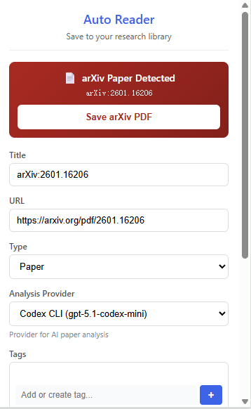
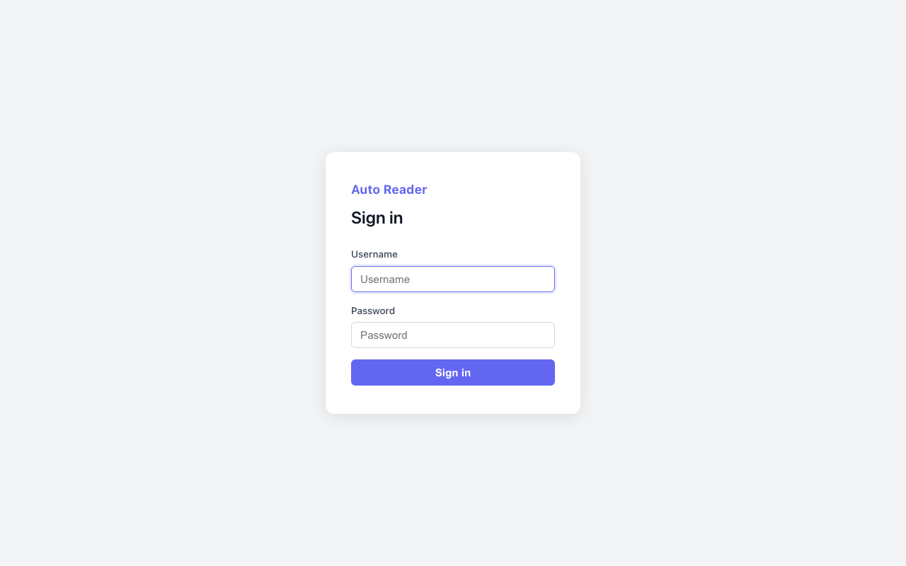

One-Click Paper Saving
Chrome extension detects papers on arXiv, OpenReview, and any PDF page. One click saves the paper, downloads the PDF, and queues it for AI analysis.
Open-source AI research platform
Save papers from anywhere. Get AI-powered deep reading notes with diagrams and math. Track trends across arXiv, Semantic Scholar, and Twitter/X. Launch autonomous research workflows that turn intent into execution.
Key Features
Chrome extension detects papers on arXiv, OpenReview, and any PDF page. One click saves the paper, downloads the PDF, and queues it for AI analysis.
Multi-pass analysis generates comprehensive notes with Mermaid diagrams, KaTeX math, method breakdowns, and code repository analysis.
Subscribe to Semantic Scholar authors, keyword queries, or Twitter/X profiles. Daily crawl surfaces new papers in a prioritized feed.
Launch research runs that execute on remote SSH servers — literature reviews, experiment monitoring, paper writing, and full research pipelines.
In-editor control surface for your paper library, ARIS run management, and quick actions without leaving your coding environment.
Search papers by title, tags, content, and reading status. Mark papers as read/unread and filter your growing library.
See It In Action



Getting Started
git clone https://github.com/CurryTang/Amadeus.git
cd AmadeusThe installer walks you through deployment mode selection (all-in-one or proxy + local device) and generates environment files.
./scripts/install.sh
# Generates: backend/.env.generated, frontend/.env.generatedcp backend/.env.generated backend/.env
cp frontend/.env.generated frontend/.envcd backend && npm install && npm run dev
# In another terminal:
cd frontend && npm install && npm run devOpen chrome://extensions/, enable Developer mode, click "Load unpacked", and select the chrome-extension/ folder.
cd vscode-extension
npm install && npm run compile
# Launch with Extension Development Host in VS CodeAfter setup, configure these in backend/.env:
# Database (local SQLite or Turso cloud)
TURSO_DATABASE_URL=file:./local.db
# Object storage for PDFs (AWS S3, MinIO, or Aliyun OSS)
OBJECT_STORAGE_PROVIDER=aws-s3
OBJECT_STORAGE_BUCKET=your-bucket
OBJECT_STORAGE_ACCESS_KEY_ID=your-key
OBJECT_STORAGE_SECRET_ACCESS_KEY=your-secret
# Authentication
ADMIN_TOKEN=your-secret-admin-tokenSee the full configuration guide for all options.
Under the Hood
Chrome extension captures paper metadata and PDF from arXiv, OpenReview, or any URL.
Paper is added to the processing queue and PDF is uploaded to object storage (S3/MinIO/OSS).
AI performs 3-pass deep reading: structure scan, content understanding, and deep analysis with math and diagrams.
Rendered notes with Mermaid diagrams, KaTeX math, method breakdowns, and linked code repositories.
Deployment Architecture
Run everything on a single machine, or split into a cheap cloud proxy (nginx + FRP) and your always-on local device for heavy AI workloads. No cloud GPU costs — Claude and Gemini CLI run on your own hardware.
┌──────────┐ ┌──────────────────────┐ ┌─────────────────────────┐
│ Browser │────►│ Cloud Server (proxy) │────►│ Local Device (WSL/PC) │
│ │ │ nginx + frps │ │ PM2: API + Frontend │
└──────────┘ └──────────────────────┘ │ SQLite, S3 storage │
└─────────────────────────┘Tech Stack
Amadeus is free, open-source, and self-hosted. Get started in minutes.